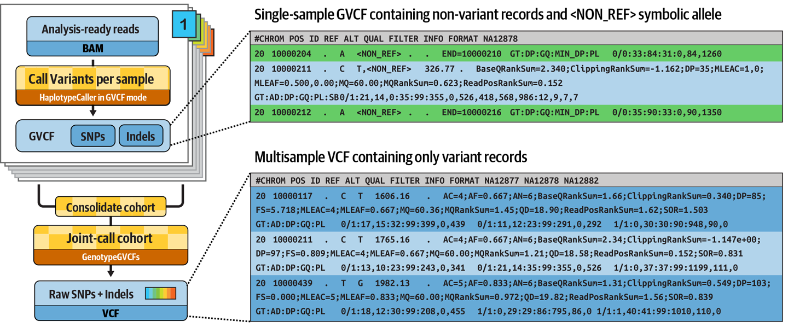

Part 2: Joint calling on a cohort¶
In the first part of this course, you built a variant calling pipeline that was completely linear and processed each sample's data independently of the others. However, in a real genomics use case, you'll typically need to look at the variant calls of multiple samples together.
In this second part, we show you how to use channels and channel operators to implement joint variant calling with GATK, building on the pipeline from Part 1.
Method overview¶
The GATK variant calling method we used in first part of this course simply generated variant calls per sample. That's fine if you only want to look at the variants from each sample in isolation, but that yields limited information. It's often more interesting to look at how variant calls differ across multiple samples, and to do so, GATK offers an alternative method called joint variant calling, which we demonstrate here.
Joint variant calling involves generating a special kind of variant output called GVCF (for Genomic VCF) for each sample, then combining the GVCF data from all the samples and finally, running a 'joint genotyping' statistical analysis.

What's special about a sample's GVCF is that it contains records summarizing sequence data statistics about all positions in the targeted area of the genome, not just the positions where the program found evidence of variation. This is critical for the joint genotyping calculation (further reading).
The GVCF is produced by GATK HaplotypeCaller, the same tool we used in Part 1, with an additional parameter (-ERC GVCF).
Combining the GVCFs is done with GATK GenomicsDBImport, which combines the per-sample calls into a data store (analogous to a database), then the actual 'joint genotyping' analysis is done with GATK GenotypeGVCFs.
Workflow¶
So to recap, in this part of the course, we're going to develop a workflow that does the following:
- Generate an index file for each BAM input file using Samtools
- Run the GATK HaplotypeCaller on each BAM input file to generate a GVCF of per-sample genomic variant calls
- Collect all the GVCFs and combine them into a GenomicsDB data store
- Run joint genotyping on the combined GVCF data store to produce a cohort-level VCF
We'll apply this to the same dataset as in Part 1.
0. Warmup: Run Samtools and GATK directly¶
Just like previously, we want to try out the commands manually before we attempt to wrap them in a workflow.
Note
Make sure you're in the correct working directory:
cd /workspaces/training/nf4-science/genomics
0.1. Index a BAM input file with Samtools¶
This first step is the same as in Part 1, so it should feel very familiar, but this time we need to do it for all three samples.
Note
We've technically already generated index files for the three samples through our pipeline, so we could go fish those out of the results directory. However, it's cleaner to just redo this manually, and it'll only take a minute.
0.1.1. Spin up the Samtools container interactively¶
0.1.2. Run the indexing command for the three samples¶
samtools index /data/bam/reads_mother.bam
samtools index /data/bam/reads_father.bam
samtools index /data/bam/reads_son.bam
Just like previously, this should produce the index files in the same directory as the corresponding BAM files.
data/bam/
├── reads_father.bam
├── reads_father.bam.bai
├── reads_mother.bam
├── reads_mother.bam.bai
├── reads_son.bam
└── reads_son.bam.bai
Now that we have index files for all three samples, we can proceed to generating the GVCFs for each of them.
0.1.3. Exit the Samtools container¶
0.2. Call variants with GATK HaplotypeCaller in GVCF mode¶
This second step is very similar to what we did Part 1: Hello Genomics, but we are now going to run GATK in 'GVCF mode'.
0.2.1. Spin up the GATK container interactively¶
0.2.2. Run the variant calling command with the GVCF option¶
In order to produce a genomic VCF (GVCF), we add the -ERC GVCF option to the base command, which switches on the HaplotypeCaller's GVCF mode.
We also change the file extension for the output file from .vcf to .g.vcf.
This is technically not a requirement, but it is a strongly recommended convention.
gatk HaplotypeCaller \
-R /data/ref/ref.fasta \
-I /data/bam/reads_mother.bam \
-O reads_mother.g.vcf \
-L /data/ref/intervals.bed \
-ERC GVCF
This creates the GVCF output file reads_mother.g.vcf in the current working directory in the container.
If you cat it to view the contents, you'll see it's much longer than the equivalent VCF we generated in Part 1. You can't even scroll up to the start of the file, and most of the lines look quite different from what we saw in the VCF in Part 1.
| Output | |
|---|---|
These represent non-variant regions where the variant caller found no evidence of variation, so it captured some statistics describing its level of confidence in the absence of variation. This makes it possible to distinguish between two very different case figures: (1) there is good quality data showing that the sample is homozygous-reference, and (2) there is not enough good data available to make a determination either way.
In a GVCF, there are typically lots of such non-variant lines, with a smaller number of variant records sprinkled among them. Try running head -176 on the GVCF to load in just the first 176 lines of the file to find an actual variant call.
The second line shows the first variant record in the file, which corresponds to the first variant in the VCF file we looked at in Part 1.
Just like the original VCF was, the output GVCF file is also accompanied by an index file, called reads_mother.g.vcf.idx.
0.2.3. Repeat the process on the other two samples¶
In order to test the joint genotyping step, we need GVCFs for all three samples, so let's generate those manually now.
gatk HaplotypeCaller \
-R /data/ref/ref.fasta \
-I /data/bam/reads_father.bam \
-O reads_father.g.vcf \
-L /data/ref/intervals.bed \
-ERC GVCF
gatk HaplotypeCaller \
-R /data/ref/ref.fasta \
-I /data/bam/reads_son.bam \
-O reads_son.g.vcf \
-L /data/ref/intervals.bed \
-ERC GVCF
Once this completes, you should have three files ending in .g.vcf in your work directory (one per sample) and their respective index files ending in .g.vcf.idx.
0.3. Run joint genotyping¶
Now that we have all the GVCFs, we can finally try out the joint genotyping approach to generating variant calls for a cohort of samples. As a reminder, it's a two-step method that consists of combining the data from all the GVCFs into a data store, then running the joint genotyping analysis proper to generate the final VCF of joint-called variants.
0.3.1. Combine all the per-sample GVCFs¶
This first step uses another GATK tool, called GenomicsDBImport, to combine the data from all the GVCFs into a GenomicsDB data store.
gatk GenomicsDBImport \
-V reads_mother.g.vcf \
-V reads_father.g.vcf \
-V reads_son.g.vcf \
-L /data/ref/intervals.bed \
--genomicsdb-workspace-path family_trio_gdb
The output of this step is effectively a directory containing a set of further nested directories holding the combined variant data in the form of multiple different files. You can poke around it but you'll quickly see this data store format is not intended to be read directly by humans.
Note
GATK includes tools that make it possible to inspect and extract variant call data from the data store as needed.
0.3.2. Run the joint genotyping analysis proper¶
This second step uses yet another GATK tool, called GenotypeGVCFs, to recalculate variant statistics and individual genotypes in light of the data available across all samples in the cohort.
This creates the VCF output file family_trio.vcf in the current working directory in the container.
It's another reasonably small file so you can cat this file to view its contents, and scroll up to find the first few variant lines.
This looks more like the original VCF we generated in Part 1, except this time we have genotype-level information for all three samples. The last three columns in the file are the genotype blocks for the samples, listed in alphabetical order.
If we look at the genotypes called for our test family trio for the very first variant, we see that the father is heterozygous-variant (0/1), and the mother and son are both homozygous-variant (1/1).
That is ultimately the information we're looking to extract from the dataset! So let's go wrap all this into a Nextflow workflow so we can do this at scale.
0.3.3. Exit the GATK container¶
Takeaway¶
You know how to run the individual commands involved in joint variant calling in the terminal to verify that they will produce the information you want.
What's next?¶
Wrap these commands into an actual pipeline.
1. Modify the per-sample variant calling step to produce a GVCF¶
The good news is that we don't need to start all over, since we already wrote a workflow that does some of this work in Part 1. However, that pipeline produces VCF files, whereas now we want GVCF files in order to do the joint genotyping. So we need to start by switching on the GVCF variant calling mode and updating the output file extension.
Note
For convenience, we are going to work with a fresh copy of the GATK workflow as it stands at the end of Part 1, but under a different name: genomics-2.nf.
1.1. Tell HaplotypeCaller to emit a GVCF and update the output extension¶
Let's open the genomics-2.nf file in the code editor.
It should look very familiar, but feel free to run it if you want to satisfy yourself that it runs as expected.
We're going to start by making two changes:
- Add the
-ERC GVCFparameter to the GATK HaplotypeCaller command; - Update the output file path to use the corresponding
.g.vcfextension, as per GATK convention.
Make sure you add a backslash (\) at the end of the previous line when you add -ERC GVCF.
Before:
| genomics-2.nf | |
|---|---|
After:
| genomics-2.nf | |
|---|---|
And that's all it takes to switch HaplotypeCaller to generating GVCFs instead of VCFs, right?
1.2. Run the pipeline to verify that you can generate GVCFs¶
The Nextflow execution command is the same as before, save for the workflow filename itself. Make sure to update that appropriately.
And the output is... all red! Oh no.
N E X T F L O W ~ version 24.10.0
┃ Launching `genomics-2.nf` [nice_gates] DSL2 - revision: 43c7de9890
executor > local (6)
[a1/0b5d00] SAMTOOLS_INDEX (3) | 3 of 3 ✔
[89/4d0c70] GATK_HAPLOTYPECALLER (3) | 0 of 3
ERROR ~ Error executing process > 'GATK_HAPLOTYPECALLER (2)'
Caused by:
Missing output file(s) `reads_mother.bam.vcf` expected by process `GATK_HAPLOTYPECALLER (2)`
Command executed:
gatk HaplotypeCaller -R ref.fasta -I reads_mother.bam -O reads_mother.bam.g.vcf -L intervals.bed -ERC GVCF
The command that was executed is correct, so we were right that that was enough to change the GATK tool's behavior. But look at that line about the missing output file. Notice anything?
That's right, we forgot to tell Nextflow to expect a new file name. Oops.
1.2. Update the output file extension in the process outputs block too¶
Because it's not enough to just change the file extension in the tool command itself, you also have to tell Nextflow that the expected output filename has changed.
Before:
| genomics-2.nf | |
|---|---|
After:
| genomics-2.nf | |
|---|---|
1.3. Run the pipeline again¶
Let's run it with -resume this time.
Ah, this time it works.
N E X T F L O W ~ version 24.10.0
┃ Launching `genomics-2.nf` [elated_carlsson] DSL2 - revision: 6a5786a6fa
executor > local (3)
[47/f7fac1] SAMTOOLS_INDEX (2) | 3 of 3, cached: 3 ✔
[ce/096ac6] GATK_HAPLOTYPECALLER (1) | 3 of 3 ✔
The Nextflow output itself doesn't look any different (compared to a successful run in normal VCF mode), but now we can find the .g.vcf files and their respective index files, for all three samples, in the results_genomics directory.
results_genomics/
├── reads_father.bam -> */47/f7fac1*/reads_father.bam
├── reads_father.bam.bai -> */47/f7fac1*/reads_father.bam.bai
├── reads_father.bam.g.vcf -> */cb/ad7430*/reads_father.bam.g.vcf
├── reads_father.bam.g.vcf.idx -> */cb/ad7430*/reads_father.bam.g.vcf.idx
├── reads_mother.bam -> */a2/56a3a8*/reads_mother.bam
├── reads_mother.bam.bai -> */a2/56a3a8*/reads_mother.bam.bai
├── reads_mother.bam.g.vcf -> */ce/096ac6*/reads_mother.bam.g.vcf
├── reads_mother.bam.g.vcf.idx -> */ce/096ac6*/reads_mother.bam.g.vcf.idx
├── reads_son.bam -> */a1/0b5d00*/reads_son.bam
├── reads_son.bam.bai -> */a1/0b5d00*/reads_son.bam.bai
├── reads_son.bam.g.vcf -> */c2/6b6563*/reads_son.bam.g.vcf
└── reads_son.bam.g.vcf.idx -> */c2/6b6563*/reads_son.bam.g.vcf.idx
If you open one of the GVCF files and scroll through it, you can verify that GATK HaplotypeCaller produced GVCF files as requested.
Takeaway¶
Okay, this one was minimal in terms of Nextflow learning... But it was a nice opportunity to reiterate the importance of the process output block!
What's next?¶
Learn to collect the contents of a channel and pass them on to the next process as a single input.
2. Collect and combine the GVCF data across all samples¶
We now need to combine the data from all the per-sample GVCFs into a form that supports the joint genotyping analysis we want to do.
2.1. Define the process that will combine the GVCFs¶
As a reminder of what we did earlier in the warmup section, combining the GVCFs is a job for the GATK tool GenomicsDBImport, which will produce a data store in the so-called GenomicsDB format.
Let's write a new process to define how that's going to work, based on the command we used earlier in the warmup section.
What do you think, looks reasonable?
Let's wire it up and see what happens.
2.2. Add a cohort_name parameter with a default value¶
We need to provide an arbitrary name for the cohort.
Later in the training series you'll learn how to use sample metadata for this sort of thing, but for now we just declare a CLI parameter using params and give it a default value for convenience.
2.3. Gather the outputs of GATK_HAPLOTYPECALLER across samples¶
If we were to just plug the output channel from the GATK_HAPLOTYPECALLER process as is, Nextflow would call the process on each sample GVCF separately.
However, we want to bundle all three GVCFs (and their index files) in such a way that Nextflow hands all of them together to a single process call.
Good news: we can do that using the collect() channel operator. Let's add the following lines to the workflow body, right after the call to GATK_HAPLOTYPECALLER:
| genomics-2.nf | |
|---|---|
Does that seem a bit complicated? Let's break this down and translate it into plain language.
- We're taking the output channel from the
GATK_HAPLOTYPECALLERprocess, referred to using the.outproperty. - Each 'element' coming out of the channel is a pair of files: the GVCF and its index file, in that order because that's the order they're listed in the process output block. Conveniently, because in the last session we named the outputs of this process (using
emit:), we can pick out the GVCFs on one hand by adding.vcfand the index files on the other by adding.idxafter the.outproperty. If we had not named those outputs, we would have had to refer to them by.out[0]and.out[1], respectively. - We append the
collect()channel operator to bundle all the GVCF files together into a single element in a new channel calledall_gvcfs_ch, and do the same with the index files to form the new channel calledall_idxs_ch.
Tip
If you're having a hard time envisioning exactly what is happening here, remember that you can use the view() operator to inspect the contents of channels before and after applying channel operators.
The resulting all_gvcfs_ch and all_idxs_ch channels are what we're going to plug into the GATK_GENOMICSDB process we just wrote.
Note
In case you were wondering, we collect the GVCFs and their index files separately because the GATK GenomicsDBImport command only wants to see the GVCF file paths. Fortunately, since Nextflow will stage all the files together for execution, we don't have to worry about the order of files like we did for BAMs and their index in Part 1.
2.4. Add a call to the workflow block to run GATK_GENOMICSDB¶
We've got a process, and we've got input channels. We just need to add the process call.
| genomics-2.nf | |
|---|---|
Ok, everything is wired up.
2.5. Run the workflow¶
Let's see if this works.
It run fairly quickly, since we're running with -resume, but...
N E X T F L O W ~ version 24.10.0
┃ Launching `genomics-2.nf` [mad_edison] DSL2 - revision: 6aea0cfded
executor > local (1)
[a2/56a3a8] SAMTOOLS_INDEX (1) | 3 of 3, cached: 3 ✔
[ce/096ac6] GATK_HAPLOTYPECALLER (1) | 3 of 3, cached: 3 ✔
[df/994a06] GATK_GENOMICSDB | 0 of 1
ERROR ~ Error executing process > 'GATK_GENOMICSDB'
Caused by:
Process `GATK_GENOMICSDB` terminated with an error exit status (1)
Command executed:
gatk GenomicsDBImport -V reads_father.bam.g.vcf reads_son.bam.g.vcf reads_mother.bam.g.vcf -L intervals.bed --genomicsdb-workspace-path family_trio_gdb
Ah. On the bright side, we see that Nextflow has picked up the GATK_GENOMICSDB process, and specifically called it just once.
That suggests that the collect() approach worked, to a point.
But, and it's a big one, the process call failed.
When we dig into the console output above, we can see the command executed isn't correct.
Can you spot the error?
Look at this bit: -V reads_father.bam.g.vcf reads_son.bam.g.vcf reads_mother.bam.g.vcf
We gave gatk GenomicsDBImport multiple GVCF files for a single -V argument, but the tool expects a separate -V argument for each GVCF file.
As a reminder, this was the command we ran in the container:
gatk GenomicsDBImport \
-V reads_mother.g.vcf \
-V reads_father.g.vcf \
-V reads_son.g.vcf \
-L /data/ref/intervals.bed \
--genomicsdb-workspace-path family_trio_gdb
So that means we need to somehow transform our bundle of GVCF files into a properly formatted command string.
2.6. Construct a command line with a separate -V argument for each input GVCF¶
This is where Nextflow being based on Groovy comes in handy, because it's going to allow us to use some fairly straightforward string manipulations to construct the necessary command string.
Specifically, using this syntax: all_gvcfs.collect { gvcf -> "-V ${gvcf}" }.join(' ')
Once again, let's break it down into its components.
- First, we take the contents of the
all_gvcfsinput channel and apply.collect()on it (just like earlier). - That allows us to pass each individual GVCF file path in the bundle to the closure,
{ gvcf -> "-V ${gvcf}" }, wheregvcfrefers to that GVCF file path. The closure is a mini-function that we use to prepend-Vto the file path, in the form of"-V ${gvcf}". - Then we use
.join(' ')to concatenate all three strings with a single space as separator.
With a concrete example, it looks like this:
- We have three files:
[A.ext, B.ext, C.ext]
- The closure modifies each one to create the strings:
"-V A.ext", "-V B.ext", "-V C.ext"
- The
.join(' ')operation generates the final string:
"-V A.ext -V B.ext -V C.ext"
Once we have that string, we can assign it to a local variable, gvcfs_line, defined with the def keyword:
def gvcfs_line = all_gvcfs.collect { gvcf -> "-V ${gvcf}" }.join(' ')
Ok, so we have our string manipulation thingy. Where do we put it?
We want this to go inside the process definition somewhere, because we want to do it after we've channeled the GVCF file paths into the process. That is because Nextflow must see them as file paths in order to stage the files themselves correctly for execution.
But where in the process can we add this?
Fun fact: you can add arbitrary code after script: and before the """ !
Great, let's add our string manipulation line there then, and update the gatk GenomicsDBImport command to use the concatenated string it produces.
Before:
| genomics-2.nf | |
|---|---|
After:
| genomics-2.nf | |
|---|---|
That should be all that's needed to provide the inputs to gatk GenomicsDBImport correctly.
Tip
When you update the gatk GenomicsDBImport command, make sure to remove the -V prefix when you swap in the ${gvcfs_line} variable.
2.7. Run the workflow to verify that it generates the GenomicsDB output as expected¶
Alright, let's see if that addressed the issue.
Aha! It seems to be working now.
N E X T F L O W ~ version 24.10.0
┃ Launching `genomics-2.nf` [special_noyce] DSL2 - revision: 11f7a51bbe
executor > local (1)
[6a/5dcf6a] SAMTOOLS_INDEX (3) | 3 of 3, cached: 3 ✔
[d6/d0d060] GATK_HAPLOTYPECALLER (3) | 3 of 3, cached: 3 ✔
[e8/749a05] GATK_GENOMICSDB | 1 of 1 ✔
The first two steps were successfully skipped, and the third step worked like a charm this time. We find our output data store in the results directory.
results_genomics/family_trio_gdb
├── 20_10037292_10066351$12912$14737
├── 20_10037292_10066351$3277$5495
├── 20_10037292_10066351$7536$9859
├── callset.json
├── __tiledb_workspace.tdb
├── vcfheader.vcf
└── vidmap.json
By the way, we didn't have to do anything special to handle the output being a directory instead of a single file. Isn't that nice?
Takeaway¶
Now you know how to collect outputs from a channel and bundle them as a single input to another process. You also know how to construct a command line to provide inputs to a given tool with the appropriate syntax.
What's next?¶
Learn how to add a second command to the same process.
3. Run the joint genotyping step as part of the same process¶
Now that we have the combined genomic variant calls, we can run the joint genotyping tool, which will produce the final output that we actually care about: the VCF of cohort-level variant calls.
For logistical reasons, we decide to include the joint genotyping inside the same process.
3.1. Rename the process from GATK_GENOMICSDB to GATK_JOINTGENOTYPING¶
Since the process will be running more than one tool, we change its name to refer to the overall operation rather than a single tool name.
Before:
After:
/*
* Combine GVCFs into GenomicsDB datastore and run joint genotyping to produce cohort-level calls
*/
process GATK_JOINTGENOTYPING {
Remember to keep your process names as descriptive as possible, to maximize readability for your colleagues —and your future self!
3.2. Add the joint genotyping command to the GATK_JOINTGENOTYPING process¶
Simply add the second command after the first one inside the script section.
Before:
| genomics-2.nf | |
|---|---|
After:
| genomics-2.nf | |
|---|---|
The two commands will be run in serial, in the same way that they would if we were to run them manually in the terminal.
3.3. Add the reference genome files to the GATK_JOINTGENOTYPING process input definitions¶
The second command requires the reference genome files, so we need to add those to the process inputs.
Before:
After:
| genomics-2.nf | |
|---|---|
It may seem annoying to type these out, but remember, you only type them once, and then you can run the workflow a million times. Worth it?
3.4. Update the process output definition to emit the VCF of cohort-level variant calls¶
We don't really care about saving the GenomicsDB datastore, which is just an intermediate format that only exists for logistical reasons, so we can just remove it from the output block if we want.
The output we're actually interested in is the VCF produced by the joint genotyping command.
Before:
After:
| genomics-2.nf | |
|---|---|
We're almost done!
3.5. Update the process call from GATK_GENOMICSDB to GATK_JOINTGENOTYPING¶
Let's not forget to rename the process call in the workflow body from GATK_GENOMICSDB to GATK_JOINTGENOTYPING. And while we're at it, we should also add the reference genome files as inputs, since we need to provide them to the joint genotyping tool.
Before:
| genomics-2.nf | |
|---|---|
After:
| genomics-2.nf | |
|---|---|
Now everything should be completely wired up.
3.6. Run the workflow¶
Finally, we can run the modified workflow...
And it works!
N E X T F L O W ~ version 24.10.0
┃ Launching `genomics-2.nf` [modest_gilbert] DSL2 - revision: 4f49922223
executor > local (1)
[6a/5dcf6a] SAMTOOLS_INDEX (3) | 3 of 3, cached: 3 ✔
[fe/6c9ad4] GATK_HAPLOTYPECALLER (1) | 3 of 3, cached: 3 ✔
[e2/a8d95f] GATK_JOINTGENOTYPING | 1 of 1 ✔
You'll find the final output file, family_trio.joint.vcf (and its file index), in the results directory. If you're the skeptical type, you can click on it to open it and verify that the workflow has generated the same variant calls that you obtained by running the tools manually at the start of this section.
You now have an automated, fully reproducible joint variant calling workflow!
Note
Keep in mind the data files we gave you cover only a tiny portion of chromosome 20. The real size of a variant callset would be counted in millions of variants. That's why we use only tiny subsets of data for training purposes!
Takeaway¶
You know how to use some common operators as well as Groovy closures to control the flow of data in your workflow.
What's next?¶
Celebrate your success and take an extra super mega long break! This was tough and you deserve it.
When you're ready to move on, have a look at our training portal to browse available training courses and select your next step.
Good luck!